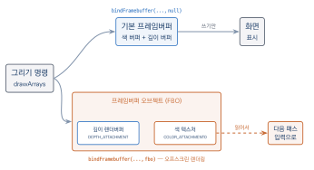
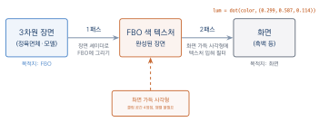
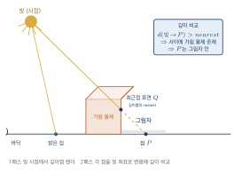
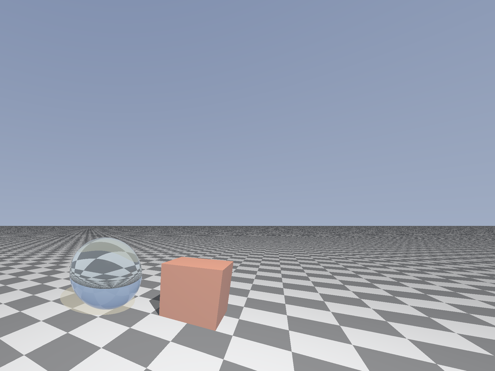

고급 렌더링 기법
이 장을 마치면
- 프레임버퍼 오브젝트(FBO)로 렌더링 결과를 텍스처에 담을 수 있다.
- 2패스 구조로 포스트 프로세싱 필터를 적용할 수 있다.
- 그림자 매핑의 원리를 이해하고 깊이맵으로 그림자를 그릴 수 있다.
- 큐브맵으로 스카이박스와 환경 매핑을 구현할 수 있다.
- 블룸·HDR·톤 매핑·FXAA 등 심화 포스트 프로세싱의 원리를 이해한다.
지금까지 우리가 그린 모든 그림은 곧장 화면으로 향했다. drawArrays나 drawElements를 호출하면 그 결과는 브라우저 캔버스, 즉 기본 프레임버퍼(default framebuffer)에 나타났다. 그런데 게임과 영화가 보여 주는 화려한 효과들 — 흑백·블룸 같은 화면 필터, 물체가 드리우는 그림자, 하늘을 감싸는 배경, 금속에 비치는 주변 풍경 — 은 하나같이 화면이 아닌 곳에 먼저 그려 두는 기법에 뿌리를 둔다.
이 장의 열쇠는 하나다. 렌더링 결과를 화면 대신 텍스처에 담을 수 있다는 것. 한 번 그린 결과를 텍스처로 손에 쥐면, 그것을 입력 삼아 다시 그릴 수 있다. 이 되먹임이 열어 주는 세계를 네 가지 대표 기법 — 프레임버퍼 오브젝트, 포스트 프로세싱, 그림자 매핑, 스카이박스와 환경 매핑 — 으로 둘러본다. 앞선 장들에서 익힌 셰이더, 행렬, 텍스처가 여기서 하나로 모인다.
11.1 프레임버퍼 오브젝트
목적지가 늘 화면이었던 이유
WebGL 컨텍스트를 얻는 순간, 화면에 대응하는 프레임버퍼framebuffer 하나가 자동으로 준비된다. 이것을 기본 프레임버퍼default framebuffer라고 한다. 프레임버퍼란 렌더링 결과가 최종적으로 쌓이는 메모리 묶음으로, 색을 저장하는 색 버퍼color buffer와 깊이를 저장하는 깊이 버퍼depth buffer로 이루어진다. 지금까지 우리가 gl.clear로 지우고 drawArrays로 채운 대상이 바로 이 기본 프레임버퍼의 두 버퍼였다.
기본 프레임버퍼의 색 버퍼는 브라우저가 화면에 직접 표시하므로, 우리는 그 내용을 그려 넣을 수만 있을 뿐 읽어서 다시 쓸 수는 없다. 한 번 그린 결과를 입력으로 되먹이려면, 결과가 화면이 아니라 내가 읽을 수 있는 메모리에 쌓여야 한다. 그 메모리가 바로 텍스처다. 우리가 직접 만들어 붙이는 프레임버퍼, 즉 프레임버퍼 오브젝트framebuffer object(FBO)가 이 일을 해낸다. FBO의 색 버퍼로 텍스처를 지정하면, 그 FBO에 그린 그림이 고스란히 텍스처 안에 담긴다. 화면 대신 텍스처를 목적지로 삼는 이 방식을 오프스크린 렌더링off-screen rendering이라고 부른다.
그림 11.1은 이 두 목적지의 차이를 요약한다. 하나의 그리기 명령이 어디로 향할지는 bindFramebuffer가 정한다. 기본 프레임버퍼로 향한 결과는 화면에 표시될 뿐 되읽을 수 없지만, FBO의 색 텍스처에 담긴 결과는 다음 렌더링의 입력으로 다시 쓸 수 있다.

FBO 만들기 — 색 텍스처와 깊이 렌더버퍼
FBO 하나를 완성하려면 세 조각이 필요하다. FBO 본체, 색을 받을 텍스처, 그리고 깊이를 받을 저장소다. 먼저 결과를 담을 텍스처를 만든다. 8장에서 이미지를 올릴 때와 달리, 여기서는 픽셀 데이터 자리에 null을 넘겨 빈 텍스처를 만든다는 점이 다르다. 아직 내용은 없지만, 지정한 크기만큼의 공간을 마련해 두는 것이다.
const FBO_W = 600, FBO_H = 400;
const sceneTex = gl.createTexture();
gl.bindTexture(gl.TEXTURE_2D, sceneTex);
gl.texImage2D(gl.TEXTURE_2D, 0, gl.RGBA, FBO_W, FBO_H, 0,
gl.RGBA, gl.UNSIGNED_BYTE, null); // null: 빈 텍스처
gl.texParameteri(gl.TEXTURE_2D, gl.TEXTURE_MIN_FILTER, gl.LINEAR);
gl.texParameteri(gl.TEXTURE_2D, gl.TEXTURE_MAG_FILTER, gl.LINEAR);색만 담아서는 3차원 장면을 제대로 그릴 수 없다. 깊이 검사(depth test)가 동작하려면 깊이 버퍼도 있어야 하기 때문이다. 깊이값은 나중에 텍스처로 읽을 일이 없다면 굳이 텍스처로 만들 필요가 없다. 그럴 때 쓰는 것이 렌더버퍼renderbuffer로, 렌더링 도중 GPU가 쓰기만 하는 용도에 최적화된 가벼운 저장소다.
const depthRbo = gl.createRenderbuffer();
gl.bindRenderbuffer(gl.RENDERBUFFER, depthRbo);
gl.renderbufferStorage(gl.RENDERBUFFER, gl.DEPTH_COMPONENT16,
FBO_W, FBO_H); // 16비트 깊이 저장소이제 FBO 본체를 만들고, 두 저장소를 부착attachment한다. 색 텍스처는 COLOR_ATTACHMENT0 자리에, 깊이 렌더버퍼는 DEPTH_ATTACHMENT 자리에 붙인다.
const fbo = gl.createFramebuffer();
gl.bindFramebuffer(gl.FRAMEBUFFER, fbo);
gl.framebufferTexture2D(gl.FRAMEBUFFER, gl.COLOR_ATTACHMENT0,
gl.TEXTURE_2D, sceneTex, 0); // 색 → 텍스처
gl.framebufferRenderbuffer(gl.FRAMEBUFFER, gl.DEPTH_ATTACHMENT,
gl.RENDERBUFFER, depthRbo); // 깊이 → 렌더버퍼부착이 끝났다면 이 FBO가 실제로 렌더링에 쓸 수 있는 완전한 상태인지 반드시 확인해야 한다. 크기가 맞지 않거나 지원하지 않는 형식을 붙이면 FBO가 불완전(incomplete)한 상태가 되어 아무것도 그려지지 않는다. checkFramebufferStatus가 FRAMEBUFFER_COMPLETE를 돌려주는지 검사하는 습관을 들이자.
if (gl.checkFramebufferStatus(gl.FRAMEBUFFER) !== gl.FRAMEBUFFER_COMPLETE)
console.log('framebuffer incomplete'); // 부착 조합이 잘못되었다목적지 전환 — 화면과 FBO를 오가기
렌더링 목적지를 바꾸는 명령은 bindFramebuffer 하나다. FBO 객체를 넘기면 그 FBO(즉 텍스처)로, null을 넘기면 다시 화면(기본 프레임버퍼)으로 목적지가 바뀐다.
gl.bindFramebuffer(gl.FRAMEBUFFER, fbo); // 이후 그리기 → 텍스처로
// ... 장면을 그린다 ...
gl.bindFramebuffer(gl.FRAMEBUFFER, null); // 이후 그리기 → 화면으로FBO와 화면은 크기가 다를 수 있다. 목적지를 바꿀 때는 반드시 gl.viewport도 함께 바꾸어야 한다. 뷰포트는 목적지를 따라 자동으로 바뀌지 않기 때문이다. 600×400 화면 프로그램에 300×300 FBO를 끼워 넣고 뷰포트를 그대로 두면, 장면이 텍스처의 왼쪽 아래 귀퉁이에만 그려지거나 잘려 나간다. bindFramebuffer(... fbo) 다음에는 gl.viewport(0, 0, FBO_W, FBO_H)를, bindFramebuffer(... null) 다음에는 gl.viewport(0, 0, canvas.width, canvas.height)를 짝지어 호출하자.
"텍스처에 그린다"가 열어 주는 것
렌더링 결과를 텍스처로 손에 쥔다는 이 단순한 능력이, 이 장 전체를 떠받친다. 대표적인 응용을 미리 정리해 두자.
| 기법 | 텍스처에 무엇을 담는가 |
|---|---|
| 포스트 프로세싱 (11.2) | 완성된 장면 색 — 이후 필터를 적용 |
| 그림자 매핑 (11.3) | 빛 시점의 깊이 — 가려짐을 판정 |
| 거울·수면 반사 | 반사된 시점의 장면 — 표면에 되비침 |
| 미니맵 | 위에서 내려다본 장면 — UI에 표시 |
이 가운데 가장 직관적인 포스트 프로세싱부터 실제로 만들어 보며, "두 번 그리기"의 감각을 익히자.
프레임버퍼 오브젝트(FBO)는 렌더링 목적지를 화면 대신 텍스처로 바꾼다. 색은 COLOR_ATTACHMENT0에 텍스처로, 깊이는 DEPTH_ATTACHMENT에 렌더버퍼로 부착하고, checkFramebufferStatus로 완전성을 확인한다. 목적지를 바꿀 때는 viewport도 함께 바꾼다.
11.2 포스트 프로세싱
2패스 구조
포스트 프로세싱post-processing은 완성된 장면 전체에 화면 단위의 후처리를 입히는 기법이다. 흑백·세피아 같은 색조 변환, 화면 가장자리를 어둡게 하는 비네팅, 밝은 부분을 번지게 하는 블룸이 모두 여기에 속한다. 이런 효과들의 공통점은 개별 물체가 아니라 화면 이미지 자체를 대상으로 한다는 것이다. 그래서 렌더링을 두 단계로 나눈다.
- 1패스 — 장면(정육면체, 모델 등)을 화면이 아니라 FBO의 텍스처에 그린다.
- 2패스 — 화면을 가득 채운 사각형에 그 텍스처를 입히되, 프래그먼트 셰이더에서 필터를 적용해 화면에 그린다.
1패스가 끝나면 완성된 장면이 텍스처 한 장에 담긴다. 2패스는 그 텍스처를 화면 전체에 펼쳐 놓고, 픽셀 하나하나에 원하는 계산을 적용해 최종 색을 만든다. 그림 11.2은 이 두 패스의 흐름과 각 패스의 목적지를 한눈에 보여 준다.

화면 가득 사각형
2패스에서 텍스처를 펼칠 도화지는 화면 전체를 덮는 사각형이다. 그런데 이 사각형은 3차원 공간에 놓인 물체가 아니라 화면 그 자체이므로, 모델·뷰·투영 행렬이 필요 없다. 정점 좌표를 처음부터 클립 공간clip space의 값 \(-1 \sim 1\)로 직접 지정하면, 변환 없이 곧바로 화면을 꽉 채운다. 네 귀퉁이를 TRIANGLE_STRIP으로 조립하면 정점 4개로 사각형이 완성된다.
// 클립 공간 네 귀퉁이 (행렬 불필요)
const quad = new Float32Array([
-1, -1, 1, -1, -1, 1, 1, 1, // TRIANGLE_STRIP 지그재그 순서
]);정점 셰이더는 이 좌표를 그대로 gl_Position에 넣고, 텍스처를 읽을 좌표(0 1)는 클립 좌표를 \(0.5\)배 하고 \(0.5\)를 더해 만든다.
#version 300 es
layout(location = 0) in vec2 aPosition; // 이미 클립 공간 좌표
out vec2 vTexCoord;
void main() {
gl_Position = vec4(aPosition, 0.0, 1.0); // 변환 없이 그대로
vTexCoord = aPosition * 0.5 + 0.5; // [-1,1] → [0,1]
}흑백 필터
색을 밝기 하나로 바꾸는 흑백 변환이 가장 간단한 필터다. 그런데 단순히 R·G·B를 평균 내면 사람 눈이 느끼는 밝기와 어긋난다. 눈은 초록에 가장 민감하고 파랑에 가장 둔감하기 때문이다. 그래서 각 채널에 서로 다른 가중치를 준 휘도luminance 공식을 쓴다.
\[ \text{luminance} = 0.299\,R + 0.587\,G + 0.114\,B \]이 가중합은 벡터의 내적 한 번으로 계산된다. 4장에서 배운 내적이 여기서 이렇게 쓰인다.
#version 300 es
precision mediump float;
in vec2 vTexCoord;
uniform sampler2D uScene; // 1패스가 남긴 장면 텍스처
out vec4 fragColor;
void main() {
vec4 color = texture(uScene, vTexCoord);
float lum = dot(color.rgb, vec3(0.299, 0.587, 0.114));
fragColor = vec4(vec3(lum), 1.0); // 세 채널 모두 같은 밝기 → 회색
}두 패스를 코드로 짜기
이제 전체를 하나의 프로그램으로 엮는다. 핵심은 프로그램 2개(장면용·필터용)와 VAO 2개(정육면체·사각형)를 갖추고, 목적지와 함께 이들을 정확히 갈아 끼우는 것이다. 6장에서 그린 색 정육면체를 FBO에 담고, 흑백 필터를 씌워 화면에 내보낸다.
// ===== 준비: 컨텍스트와 glMatrix =====
const canvas = document.getElementById('glCanvas');
const gl = canvas.getContext('webgl2');
const { mat4 } = glMatrix;
// ===== 셰이더 도우미 (2장의 도우미를 압축한 형태) =====
function makeProgram(gl, vsSource, fsSource) {
function compile(type, src) {
const s = gl.createShader(type);
gl.shaderSource(s, src);
gl.compileShader(s);
if (!gl.getShaderParameter(s, gl.COMPILE_STATUS))
console.log(gl.getShaderInfoLog(s));
return s;
}
const p = gl.createProgram();
gl.attachShader(p, compile(gl.VERTEX_SHADER, vsSource));
gl.attachShader(p, compile(gl.FRAGMENT_SHADER, fsSource));
gl.linkProgram(p);
if (!gl.getProgramParameter(p, gl.LINK_STATUS))
console.log(gl.getProgramInfoLog(p));
return p;
}
// ===== 1패스 셰이더: 색 정육면체를 그리는 장면 셰이더 =====
const sceneVS = `#version 300 es
layout(location = 0) in vec3 aPosition;
layout(location = 1) in vec3 aColor;
uniform mat4 uMVP;
out vec3 vColor;
void main() {
gl_Position = uMVP * vec4(aPosition, 1.0);
vColor = aColor;
}`;
const sceneFS = `#version 300 es
precision mediump float;
in vec3 vColor;
out vec4 fragColor;
void main() { fragColor = vec4(vColor, 1.0); }`;
// ===== 2패스 셰이더: 화면 가득 사각형 + 흑백 필터 =====
const filterVS = `#version 300 es
layout(location = 0) in vec2 aPosition;
out vec2 vTexCoord;
void main() {
gl_Position = vec4(aPosition, 0.0, 1.0); // 행렬이 필요 없다
vTexCoord = aPosition * 0.5 + 0.5; // [-1,1] → [0,1]
}`;
const filterFS = `#version 300 es
precision mediump float;
in vec2 vTexCoord;
uniform sampler2D uScene;
out vec4 fragColor;
void main() {
vec4 color = texture(uScene, vTexCoord);
float lum = dot(color.rgb, vec3(0.299, 0.587, 0.114));
fragColor = vec4(vec3(lum), 1.0); // 흑백 변환
}`;
const sceneProgram = makeProgram(gl, sceneVS, sceneFS);
const filterProgram = makeProgram(gl, filterVS, filterFS);
// ===== VAO 1: 색 정육면체 (정점 8개 + 인덱스 36개) =====
const positions = new Float32Array([
-1, -1, 1, 1, -1, 1, 1, 1, 1, -1, 1, 1, // 앞면
-1, -1, -1, 1, -1, -1, 1, 1, -1, -1, 1, -1, // 뒷면
]);
const colors = new Float32Array([ // 좌표를 색으로
0, 0, 1, 1, 0, 1, 1, 1, 1, 0, 1, 1,
0, 0, 0, 1, 0, 0, 1, 1, 0, 0, 1, 0,
]);
const indices = new Uint16Array([
0, 1, 2, 0, 2, 3, 1, 5, 6, 1, 6, 2, 5, 4, 7, 5, 7, 6,
4, 0, 3, 4, 3, 7, 3, 2, 6, 3, 6, 7, 4, 5, 1, 4, 1, 0,
]);
const cubeVao = gl.createVertexArray();
gl.bindVertexArray(cubeVao);
const posVbo = gl.createBuffer();
gl.bindBuffer(gl.ARRAY_BUFFER, posVbo);
gl.bufferData(gl.ARRAY_BUFFER, positions, gl.STATIC_DRAW);
gl.enableVertexAttribArray(0);
gl.vertexAttribPointer(0, 3, gl.FLOAT, false, 0, 0);
const colVbo = gl.createBuffer();
gl.bindBuffer(gl.ARRAY_BUFFER, colVbo);
gl.bufferData(gl.ARRAY_BUFFER, colors, gl.STATIC_DRAW);
gl.enableVertexAttribArray(1);
gl.vertexAttribPointer(1, 3, gl.FLOAT, false, 0, 0);
const ebo = gl.createBuffer();
gl.bindBuffer(gl.ELEMENT_ARRAY_BUFFER, ebo);
gl.bufferData(gl.ELEMENT_ARRAY_BUFFER, indices, gl.STATIC_DRAW);
// ===== VAO 2: 화면 가득 사각형 (TRIANGLE_STRIP 정점 4개) =====
const quadVao = gl.createVertexArray();
gl.bindVertexArray(quadVao);
const quadVbo = gl.createBuffer();
gl.bindBuffer(gl.ARRAY_BUFFER, quadVbo);
gl.bufferData(gl.ARRAY_BUFFER, new Float32Array([
-1, -1, 1, -1, -1, 1, 1, 1,
]), gl.STATIC_DRAW);
gl.enableVertexAttribArray(0);
gl.vertexAttribPointer(0, 2, gl.FLOAT, false, 0, 0);
// ===== FBO: 색 텍스처 + 깊이 렌더버퍼 =====
const FBO_W = 600, FBO_H = 400;
const sceneTex = gl.createTexture();
gl.bindTexture(gl.TEXTURE_2D, sceneTex);
gl.texImage2D(gl.TEXTURE_2D, 0, gl.RGBA, FBO_W, FBO_H, 0,
gl.RGBA, gl.UNSIGNED_BYTE, null);
gl.texParameteri(gl.TEXTURE_2D, gl.TEXTURE_MIN_FILTER, gl.LINEAR);
gl.texParameteri(gl.TEXTURE_2D, gl.TEXTURE_MAG_FILTER, gl.LINEAR);
gl.texParameteri(gl.TEXTURE_2D, gl.TEXTURE_WRAP_S, gl.CLAMP_TO_EDGE);
gl.texParameteri(gl.TEXTURE_2D, gl.TEXTURE_WRAP_T, gl.CLAMP_TO_EDGE);
const depthRbo = gl.createRenderbuffer();
gl.bindRenderbuffer(gl.RENDERBUFFER, depthRbo);
gl.renderbufferStorage(gl.RENDERBUFFER, gl.DEPTH_COMPONENT16, FBO_W, FBO_H);
const fbo = gl.createFramebuffer();
gl.bindFramebuffer(gl.FRAMEBUFFER, fbo);
gl.framebufferTexture2D(gl.FRAMEBUFFER, gl.COLOR_ATTACHMENT0,
gl.TEXTURE_2D, sceneTex, 0);
gl.framebufferRenderbuffer(gl.FRAMEBUFFER, gl.DEPTH_ATTACHMENT,
gl.RENDERBUFFER, depthRbo);
if (gl.checkFramebufferStatus(gl.FRAMEBUFFER) !== gl.FRAMEBUFFER_COMPLETE)
console.log('framebuffer incomplete');
// ===== MVP 행렬 =====
const proj = mat4.create(), view = mat4.create(), mvp = mat4.create();
mat4.perspective(proj, Math.PI / 4, canvas.width / canvas.height, 0.1, 100);
mat4.lookAt(view, [2.4, 2.0, 3.2], [0, 0, 0], [0, 1, 0]);
mat4.multiply(mvp, proj, view);
// ===== 1패스: 정육면체를 FBO(텍스처)에 그린다 =====
gl.bindFramebuffer(gl.FRAMEBUFFER, fbo);
gl.viewport(0, 0, FBO_W, FBO_H); // FBO 크기에 맞춘 뷰포트
gl.enable(gl.DEPTH_TEST);
gl.clearColor(0.9, 0.85, 0.75, 1.0);
gl.clear(gl.COLOR_BUFFER_BIT | gl.DEPTH_BUFFER_BIT);
gl.useProgram(sceneProgram);
gl.uniformMatrix4fv(gl.getUniformLocation(sceneProgram, 'uMVP'), false, mvp);
gl.bindVertexArray(cubeVao);
gl.drawElements(gl.TRIANGLES, 36, gl.UNSIGNED_SHORT, 0);
// ===== 2패스: 텍스처를 화면 가득 사각형에 입혀 필터 적용 =====
gl.bindFramebuffer(gl.FRAMEBUFFER, null); // 목적지를 화면으로 복귀
gl.viewport(0, 0, canvas.width, canvas.height);
gl.clear(gl.COLOR_BUFFER_BIT | gl.DEPTH_BUFFER_BIT);
gl.useProgram(filterProgram);
gl.activeTexture(gl.TEXTURE0);
gl.bindTexture(gl.TEXTURE_2D, sceneTex); // 1패스의 결과를 입력으로
gl.uniform1i(gl.getUniformLocation(filterProgram, 'uScene'), 0);
gl.bindVertexArray(quadVao);
gl.drawArrays(gl.TRIANGLE_STRIP, 0, 4);실행하면 6장의 알록달록한 색 정육면체가 흑백으로 나타난다. 필터 프래그먼트 셰이더의 마지막 두 줄만 바꾸면 세피아·색반전 등 다른 효과로 손쉽게 넘어갈 수 있다(실습 11-1). 필터가 화면 전체의 픽셀에 균일하게 적용되는 것은, 2패스가 개별 물체가 아니라 텍스처 한 장을 다루기 때문이다.
2패스 렌더링에서 가장 흔한 실수는 프로그램이나 VAO를 바꾸지 않은 채 다음 패스를 그리는 것이다. 1패스는 sceneProgram과 cubeVao로, 2패스는 filterProgram과 quadVao로 그려야 한다. useProgram과 bindVertexArray를 패스 시작마다 짝지어 호출하면 헷갈리지 않는다. 여기에 bindFramebuffer와 viewport까지, "프로그램·VAO·목적지·뷰포트" 네 가지를 패스마다 챙기는 습관을 들이자.
포스트 프로세싱은 2패스 구조다. 1패스에서 장면을 FBO 텍스처에 담고, 2패스에서 화면 가득 사각형(클립 공간 4정점, 행렬 불필요)에 그 텍스처를 입혀 필터를 적용한다. 흑백은 휘도 \(\text{dot}(\text{color}, (0.299, 0.587, 0.114))\)로 계산한다.
11.3 그림자 매핑
그림자란 빛이 닿지 못한 자리
물체가 바닥에 드리우는 그림자는 장면에 깊이와 사실감을 준다. 그림자의 본질은 간단하다. 어떤 지점이 빛과 자기 사이에 다른 물체를 두고 있으면, 그 지점에는 빛이 닿지 못한다. 즉 빛의 눈으로 봤을 때 가려진 곳이 그림자다. 그림자 매핑shadow mapping은 이 통찰을 그대로 알고리즘으로 옮긴다. 그리고 "빛의 눈으로 본다"라는 말은, 카메라를 빛의 위치에 두고 한 번 렌더링한다는 뜻이다. 여기서 다시 2패스 구조가 등장한다.
- 1패스 — 빛의 시점에서 장면을 렌더링하되, 색은 버리고 깊이만 텍스처에 기록한다. 이 텍스처를 깊이맵depth map 또는 섀도맵이라 한다. 깊이맵의 각 픽셀에는 "그 방향에서 빛에 가장 가까운 표면까지의 거리"가 담긴다.
- 2패스 — 카메라 시점에서 본 렌더링을 하며, 각 프래그먼트를 빛의 좌표계로 변환해 깊이맵과 비교한다. 내 깊이가 깊이맵에 적힌 값보다 크면(= 빛에서 더 멀면) 나와 빛 사이에 다른 표면이 있다는 뜻이므로 그림자다.
그림 11.3은 이 판정의 핵심을 그림으로 보여 준다. 빛에서 어떤 점 \(P\)로 향하는 방향을 따라, 깊이맵에는 그 방향에서 가장 가까운 표면 \(Q\)까지의 거리(nearest)가 담겨 있다. \(P\)까지의 거리가 이 값보다 크면 빛과 \(P\) 사이에 가림 물체가 있다는 뜻이므로 \(P\)는 그림자 안이다.

깊이 텍스처
1패스에서 만들 깊이맵은 색이 아니라 깊이를 담으므로, 11.1절의 색 텍스처와 형식이 다르다. 내부 형식으로 DEPTH_COMPONENT24(24비트 깊이)를 쓰고, FBO에는 COLOR_ATTACHMENT0이 아니라 DEPTH_ATTACHMENT에 부착한다. 색 버퍼는 아예 필요 없다.
const SHADOW_SIZE = 1024;
const depthTex = gl.createTexture();
gl.bindTexture(gl.TEXTURE_2D, depthTex);
gl.texImage2D(gl.TEXTURE_2D, 0, gl.DEPTH_COMPONENT24,
SHADOW_SIZE, SHADOW_SIZE, 0,
gl.DEPTH_COMPONENT, gl.UNSIGNED_INT, null);
gl.texParameteri(gl.TEXTURE_2D, gl.TEXTURE_MIN_FILTER, gl.NEAREST);
gl.texParameteri(gl.TEXTURE_2D, gl.TEXTURE_MAG_FILTER, gl.NEAREST);
const depthFbo = gl.createFramebuffer();
gl.bindFramebuffer(gl.FRAMEBUFFER, depthFbo);
gl.framebufferTexture2D(gl.FRAMEBUFFER, gl.DEPTH_ATTACHMENT,
gl.TEXTURE_2D, depthTex, 0); // 깊이만 부착빛 시점 행렬과 bias 행렬
빛의 시점에서 장면을 그리려면, 카메라 때와 똑같이 뷰 행렬과 투영 행렬이 필요하다. 다만 이번 시점의 주인공은 카메라가 아니라 빛이다. 빛의 위치에서 장면 중심을 바라보는 lookAt으로 뷰 행렬을, 방향광이라면 ortho(직교 투영)로 투영 행렬을 만든다. 둘을 곱한 것이 빛의 뷰-투영 행렬이다.
const lightView = mat4.create(), lightProj = mat4.create();
mat4.lookAt(lightView, lightPos, [0, 0, 0], [0, 1, 0]);
mat4.ortho(lightProj, -8, 8, -8, 8, 1, 20); // 방향광 → 직교 투영
const lightMVP = mat4.create();
mat4.multiply(lightMVP, lightProj, lightView); // 1패스에서 사용2패스에서 프래그먼트를 빛 좌표계로 옮기면 그 결과는 클립 공간, 곧 \(-1 \sim 1\) 범위로 나온다. 그런데 텍스처(깊이맵)를 읽는 좌표는 \(0 \sim 1\) 범위여야 한다. 이 범위를 맞춰 주는 것이 bias 행렬bias matrix이다. 모든 축을 \(0.5\)배 하고 \(0.5\)만큼 옮겨 \([-1, 1]\)을 \([0, 1]\)로 사상한다.
\[ B = \begin{pmatrix} 0.5 & 0 & 0 & 0.5 \\ 0 & 0.5 & 0 & 0.5 \\ 0 & 0 & 0.5 & 0.5 \\ 0 & 0 & 0 & 1 \end{pmatrix} \]const biasMatrix = mat4.fromValues( // 열 우선 저장 (4장 참고)
0.5, 0, 0, 0,
0, 0.5, 0, 0,
0, 0, 0.5, 0,
0.5, 0.5, 0.5, 1);
const shadowMVP = mat4.create();
mat4.multiply(shadowMVP, biasMatrix, lightMVP); // 2패스에서 사용그림자 판정 프래그먼트 셰이더
본 렌더링의 프래그먼트 셰이더가 그림자 판정의 심장이다. 정점 셰이더에서 각 정점에 shadowMVP를 곱해 빛 좌표를 넘겨받은 뒤, 원근 나눗셈(.xyz / .w)으로 \([0,1]\) 좌표를 완성한다. 이 좌표의 \(xy\)로 깊이맵을 읽으면 "빛에서 가장 가까운 표면의 깊이"가 나오고, \(z\)는 "지금 이 프래그먼트의 빛 기준 깊이"다. 둘을 비교해 그림자를 판정한다.
#version 300 es
precision mediump float;
in vec3 vNormal;
in vec4 vShadowCoord; // 빛 좌표계의 위치 (bias까지 적용됨)
uniform sampler2D uDepthMap; // 1패스가 만든 깊이맵
uniform vec3 uColor;
uniform vec3 uLightDir; // 표면에서 빛을 향하는 방향
out vec4 fragColor;
void main() {
// 원근 나눗셈으로 [0,1] 좌표 완성
vec3 sc = vShadowCoord.xyz / vShadowCoord.w;
// 깊이맵에 기록된, 빛에서 가장 가까운 표면의 깊이
float nearest = texture(uDepthMap, sc.xy).r;
// 내 깊이가 그보다 (bias만큼) 더 멀면 그림자 안이다
float shadow = (sc.z - 0.005 > nearest) ? 0.0 : 1.0;
// 램버트 확산 조명에 그림자 계수를 곱한다 (7장 조명 참고)
float diff = max(dot(normalize(vNormal), uLightDir), 0.0);
vec3 color = uColor * (0.35 + 0.65 * diff * shadow);
fragColor = vec4(color, 1.0);
}섀도 아크네와 bias
위 셰이더에서 sc.z와 nearest를 그냥 비교하지 않고 sc.z - 0.005처럼 작은 값을 빼 준 데에 핵심이 숨어 있다. 깊이맵은 해상도가 유한하므로, 빛이 정면으로 비추는 평평한 바닥조차 저장된 깊이와 실제 깊이 사이에 미세한 오차가 생긴다. 이 오차 때문에 표면이 자기 자신을 그림자로 오판하여, 밝은 면에 얼룩덜룩한 줄무늬가 생긴다. 이 현상을 섀도 아크네shadow acne라고 한다.
해법은 비교에 약간의 여유, 즉 biasbias를 두는 것이다. 내 깊이가 깊이맵 값보다 작은 상수 이상으로 더 멀 때만 그림자로 판정하면, 표면 자신의 미세한 오차는 무시된다. bias가 너무 작으면 아크네가 남고, 너무 크면 그림자가 물체에서 떨어져 뜨는 피터 팬 현상peter panning이 생긴다. 장면에 맞는 값을 실험으로 찾아야 한다.
바닥과 정육면체에 그림자 드리우기
원리를 코드로 완성해 보자. 바닥 평면 위에 정육면체를 놓고, 빛의 시점으로 깊이맵을 만든 뒤 그림자를 판정한다. 정육면체 각 면의 법선을 담아 간단한 확산 조명까지 함께 적용한다.
// ===== 준비: 컨텍스트와 glMatrix =====
const canvas = document.getElementById('glCanvas');
const gl = canvas.getContext('webgl2');
const { mat4, vec3 } = glMatrix;
// ===== 셰이더 도우미 (2장의 도우미를 압축한 형태) =====
function makeProgram(gl, vsSource, fsSource) {
function compile(type, src) {
const s = gl.createShader(type);
gl.shaderSource(s, src);
gl.compileShader(s);
if (!gl.getShaderParameter(s, gl.COMPILE_STATUS))
console.log(gl.getShaderInfoLog(s));
return s;
}
const p = gl.createProgram();
gl.attachShader(p, compile(gl.VERTEX_SHADER, vsSource));
gl.attachShader(p, compile(gl.FRAGMENT_SHADER, fsSource));
gl.linkProgram(p);
if (!gl.getProgramParameter(p, gl.LINK_STATUS))
console.log(gl.getProgramInfoLog(p));
return p;
}
// ===== 1패스: 빛 시점에서 깊이만 기록 =====
const depthVS = `#version 300 es
layout(location = 0) in vec3 aPosition;
uniform mat4 uLightMVP;
void main() { gl_Position = uLightMVP * vec4(aPosition, 1.0); }`;
const depthFS = `#version 300 es
precision mediump float;
void main() { }`; // 색은 없다 — 깊이만 기록된다
// ===== 2패스: 그림자 판정이 들어간 본 렌더링 =====
const mainVS = `#version 300 es
layout(location = 0) in vec3 aPosition;
layout(location = 1) in vec3 aNormal;
uniform mat4 uMVP;
uniform mat4 uShadowMVP;
out vec3 vNormal;
out vec4 vShadowCoord;
void main() {
gl_Position = uMVP * vec4(aPosition, 1.0);
vNormal = aNormal;
vShadowCoord = uShadowMVP * vec4(aPosition, 1.0);
}`;
const mainFS = `#version 300 es
precision mediump float;
in vec3 vNormal;
in vec4 vShadowCoord;
uniform sampler2D uDepthMap;
uniform vec3 uColor;
uniform vec3 uLightDir;
out vec4 fragColor;
void main() {
vec3 sc = vShadowCoord.xyz / vShadowCoord.w;
float nearest = texture(uDepthMap, sc.xy).r;
float shadow = (sc.z - 0.005 > nearest) ? 0.0 : 1.0;
float diff = max(dot(normalize(vNormal), uLightDir), 0.0);
vec3 color = uColor * (0.35 + 0.65 * diff * shadow);
fragColor = vec4(color, 1.0);
}`;
const depthProgram = makeProgram(gl, depthVS, depthFS);
const mainProgram = makeProgram(gl, mainVS, mainFS);
// ===== 장면 기하: 바닥 평면 + 정육면체 (위치 3 + 법선 3) =====
function cubeVertices(cx, cy, cz, half) {
const faces = [ // [법선, 가로축, 세로축]
[[0,0, 1],[ 1,0,0],[0,1,0]], [[0,0,-1],[-1,0,0],[0,1,0]],
[[1,0, 0],[ 0,0,-1],[0,1,0]], [[-1,0,0],[ 0,0,1],[0,1,0]],
[[0,1, 0],[ 1,0,0],[0,0,-1]], [[0,-1,0],[ 1,0,0],[0,0,1]],
];
const v = [];
for (const [n, u, w] of faces) {
const corner = (a, b) => v.push(
cx + half * (n[0] + a * u[0] + b * w[0]),
cy + half * (n[1] + a * u[1] + b * w[1]),
cz + half * (n[2] + a * u[2] + b * w[2]),
n[0], n[1], n[2]);
corner(-1, -1); corner(1, -1); corner(1, 1); // 삼각형 1
corner(-1, -1); corner(1, 1); corner(-1, 1); // 삼각형 2
}
return v;
}
const floorVerts = [ // y = 0 평면, 법선 +y
-4, 0, -4, 0, 1, 0, 4, 0, -4, 0, 1, 0, 4, 0, 4, 0, 1, 0,
-4, 0, -4, 0, 1, 0, 4, 0, 4, 0, 1, 0, -4, 0, 4, 0, 1, 0,
];
const verts = new Float32Array(
[...floorVerts, ...cubeVertices(0, 0.8, 0, 0.8)]);
const vao = gl.createVertexArray();
gl.bindVertexArray(vao);
const vbo = gl.createBuffer();
gl.bindBuffer(gl.ARRAY_BUFFER, vbo);
gl.bufferData(gl.ARRAY_BUFFER, verts, gl.STATIC_DRAW);
gl.enableVertexAttribArray(0);
gl.vertexAttribPointer(0, 3, gl.FLOAT, false, 24, 0); // 위치
gl.enableVertexAttribArray(1);
gl.vertexAttribPointer(1, 3, gl.FLOAT, false, 24, 12); // 법선
// ===== 깊이맵 FBO: 깊이 텍스처만 부착 =====
const SHADOW_SIZE = 1024;
const depthTex = gl.createTexture();
gl.bindTexture(gl.TEXTURE_2D, depthTex);
gl.texImage2D(gl.TEXTURE_2D, 0, gl.DEPTH_COMPONENT24,
SHADOW_SIZE, SHADOW_SIZE, 0,
gl.DEPTH_COMPONENT, gl.UNSIGNED_INT, null);
gl.texParameteri(gl.TEXTURE_2D, gl.TEXTURE_MIN_FILTER, gl.NEAREST);
gl.texParameteri(gl.TEXTURE_2D, gl.TEXTURE_MAG_FILTER, gl.NEAREST);
gl.texParameteri(gl.TEXTURE_2D, gl.TEXTURE_WRAP_S, gl.CLAMP_TO_EDGE);
gl.texParameteri(gl.TEXTURE_2D, gl.TEXTURE_WRAP_T, gl.CLAMP_TO_EDGE);
const depthFbo = gl.createFramebuffer();
gl.bindFramebuffer(gl.FRAMEBUFFER, depthFbo);
gl.framebufferTexture2D(gl.FRAMEBUFFER, gl.DEPTH_ATTACHMENT,
gl.TEXTURE_2D, depthTex, 0);
if (gl.checkFramebufferStatus(gl.FRAMEBUFFER) !== gl.FRAMEBUFFER_COMPLETE)
console.log('framebuffer incomplete');
// ===== 행렬: 빛 시점과 카메라 시점 =====
const lightPos = [-4, 4, 2];
const lightView = mat4.create(), lightProj = mat4.create();
mat4.lookAt(lightView, lightPos, [0, 0, 0], [0, 1, 0]);
mat4.ortho(lightProj, -8, 8, -8, 8, 1, 20);
const lightMVP = mat4.create();
mat4.multiply(lightMVP, lightProj, lightView);
const biasMatrix = mat4.fromValues( // [-1,1] → [0,1]
0.5, 0, 0, 0, 0, 0.5, 0, 0,
0, 0, 0.5, 0, 0.5, 0.5, 0.5, 1);
const shadowMVP = mat4.create();
mat4.multiply(shadowMVP, biasMatrix, lightMVP);
const proj = mat4.create(), view = mat4.create(), mvp = mat4.create();
mat4.perspective(proj, Math.PI / 4, canvas.width / canvas.height, 0.1, 100);
mat4.lookAt(view, [4, 3.5, 6], [0, 0.5, 0], [0, 1, 0]);
mat4.multiply(mvp, proj, view);
const lightDir = vec3.create();
vec3.normalize(lightDir, lightPos); // 원점 기준 빛 방향
// ===== 1패스: 빛 시점에서 깊이맵을 만든다 =====
gl.enable(gl.DEPTH_TEST);
gl.bindFramebuffer(gl.FRAMEBUFFER, depthFbo);
gl.viewport(0, 0, SHADOW_SIZE, SHADOW_SIZE);
gl.clear(gl.DEPTH_BUFFER_BIT); // 깊이만 지운다
gl.useProgram(depthProgram);
gl.uniformMatrix4fv(gl.getUniformLocation(depthProgram, 'uLightMVP'),
false, lightMVP);
gl.bindVertexArray(vao);
gl.drawArrays(gl.TRIANGLES, 0, 42); // 바닥 6 + 정육면체 36
// ===== 2패스: 카메라 시점에서 그림자와 함께 그린다 =====
gl.bindFramebuffer(gl.FRAMEBUFFER, null);
gl.viewport(0, 0, canvas.width, canvas.height);
gl.clearColor(0.75, 0.85, 0.95, 1.0);
gl.clear(gl.COLOR_BUFFER_BIT | gl.DEPTH_BUFFER_BIT);
gl.useProgram(mainProgram);
gl.uniformMatrix4fv(gl.getUniformLocation(mainProgram, 'uMVP'), false, mvp);
gl.uniformMatrix4fv(gl.getUniformLocation(mainProgram, 'uShadowMVP'),
false, shadowMVP);
gl.uniform3fv(gl.getUniformLocation(mainProgram, 'uLightDir'), lightDir);
gl.activeTexture(gl.TEXTURE0);
gl.bindTexture(gl.TEXTURE_2D, depthTex); // 깊이맵을 입력으로
gl.uniform1i(gl.getUniformLocation(mainProgram, 'uDepthMap'), 0);
const uColor = gl.getUniformLocation(mainProgram, 'uColor');
gl.uniform3f(uColor, 0.8, 0.8, 0.8); // 바닥: 밝은 회색
gl.drawArrays(gl.TRIANGLES, 0, 6);
gl.uniform3f(uColor, 1.0, 0.55, 0.2); // 정육면체: 주황
gl.drawArrays(gl.TRIANGLES, 6, 36);실행하면 주황색 정육면체가 밝은 바닥 위에 앉고, 빛 반대쪽 바닥에 또렷한 그림자가 드리운다. 빛의 위치 lightPos를 바꾸면 그림자의 방향과 길이가 따라 움직인다. bias 상수 0.005를 0.0으로 바꾸어 실행하면, 밝은 바닥에 섀도 아크네 줄무늬가 나타나는 것도 직접 확인할 수 있다.
그림자 매핑은 1패스에서 빛 시점의 깊이맵(DEPTH_COMPONENT24를 DEPTH_ATTACHMENT에 부착)을 만들고, 2패스에서 각 프래그먼트를 빛 좌표로 옮겨( bias\(\times\)lightProj\(\times\)lightView ) 깊이맵과 비교한다. 내 깊이가 더 멀면 그림자다. 자기 그림자 얼룩(섀도 아크네)은 비교에 작은 bias를 두어 막는다.
11.4 스카이박스와 환경 매핑
큐브맵 텍스처
지금까지의 텍스처는 2차원 이미지 한 장이었다. 큐브맵cube map은 정육면체의 여섯 면에 각각 이미지를 붙인, 여섯 장짜리 텍스처다. 큐브맵을 샘플링할 때는 \(uv\) 좌표가 아니라 방향 벡터를 넘긴다. 큐브맵의 중심에서 그 방향으로 광선을 쏘아, 광선이 부딪히는 면의 픽셀을 읽는 것이다. 사방을 둘러싼 환경 — 하늘, 주변 풍경 — 을 담기에 꼭 맞는 구조다.
큐브맵 텍스처는 TEXTURE_CUBE_MAP으로 바인딩하고, 여섯 면을 각각의 타깃 상수에 texImage2D로 올린다. 이 예제에서는 이미지 파일 없이, 면마다 다른 색의 그라데이션을 Uint8Array로 절차적으로 만들어 넣는다.
const faces = [ // [면 타깃, 위쪽 색, 아래쪽 색] — 방향 확인용
[gl.TEXTURE_CUBE_MAP_POSITIVE_X, [255,170,100], [190, 70, 40]], // +x
[gl.TEXTURE_CUBE_MAP_NEGATIVE_X, [170,130,235], [ 80, 50,150]], // -x
[gl.TEXTURE_CUBE_MAP_POSITIVE_Y, [180,215,255], [ 90,150,255]], // +y(하늘)
[gl.TEXTURE_CUBE_MAP_NEGATIVE_Y, [ 70, 90, 70], [ 25, 35, 25]], // -y(바닥)
[gl.TEXTURE_CUBE_MAP_POSITIVE_Z, [130,220,205], [ 40,120,110]], // +z
[gl.TEXTURE_CUBE_MAP_NEGATIVE_Z, [255,225,140], [190,150, 60]], // -z
];
gl.bindTexture(gl.TEXTURE_CUBE_MAP, cubemap);
for (const [target, top, bottom] of faces)
gl.texImage2D(target, 0, gl.RGBA, SIZE, SIZE, 0,
gl.RGBA, gl.UNSIGNED_BYTE, makeFace(top, bottom));셰이더에서는 2차원 텍스처의 sampler2D 대신 samplerCube를 쓰고, texture()의 둘째 인자로 방향 벡터를 넘긴다.
uniform samplerCube uSkybox;
// ...
fragColor = texture(uSkybox, normalize(vDir)); // 방향으로 샘플링스카이박스 — 카메라를 감싸는 정육면체
스카이박스skybox는 큐브맵을 배경 하늘로 쓰는 기법이다. 카메라를 감싸는 커다란 정육면체를 그리되, 각 정점의 위치 자체를 샘플링 방향으로 삼는다. 정육면체 표면의 한 점을 바라보면 그 방향의 큐브맵 픽셀이 읽히므로, 사방이 환경 이미지로 채워진다.
여기에 두 가지 요령이 필요하다. 첫째, 스카이박스는 카메라가 어디로 움직이든 늘 같은 거리에 있는 것처럼 보여야 한다. 그래서 뷰 행렬에서 이동 성분을 제거해 회전만 남긴다. glMatrix의 mat4는 열 우선 저장이므로, 이동 성분은 배열의 [12], [13], [14]에 들어 있다(4장). 이 세 칸을 0으로 만들면 된다.
mat4.lookAt(view, [3, 1.2, 2], [0, 0, 0], [0, 1, 0]);
view[12] = view[13] = view[14] = 0; // 이동 성분 제거 → 회전만 남긴다둘째, 스카이박스는 장면의 가장 뒤에 있어야 한다. 정점 셰이더에서 gl_Position을 pos.xyww로 내보내면, 원근 나눗셈 뒤 깊이가 항상 최댓값 \(1.0\)이 되어 다른 모든 물체 뒤에 놓인다. 이때 깊이 검사를 LEQUAL로 두어야 깊이 \(1.0\)인 스카이박스가 버려지지 않는다.
gl.depthFunc(gl.LEQUAL); // 깊이 1.0인 스카이박스를 통과시킨다절차적 큐브맵으로 스카이박스 그리기
이미지 파일 없이 여섯 면을 서로 다른 색의 그라데이션으로 만들어, 그 안에서 카메라가 비스듬히 바라보는 장면을 완성한다.
// ===== 준비: 컨텍스트와 glMatrix =====
const canvas = document.getElementById('glCanvas');
const gl = canvas.getContext('webgl2');
const { mat4 } = glMatrix;
// ===== 셰이더 도우미 (2장의 도우미를 압축한 형태) =====
function makeProgram(gl, vsSource, fsSource) {
function compile(type, src) {
const s = gl.createShader(type);
gl.shaderSource(s, src);
gl.compileShader(s);
if (!gl.getShaderParameter(s, gl.COMPILE_STATUS))
console.log(gl.getShaderInfoLog(s));
return s;
}
const p = gl.createProgram();
gl.attachShader(p, compile(gl.VERTEX_SHADER, vsSource));
gl.attachShader(p, compile(gl.FRAGMENT_SHADER, fsSource));
gl.linkProgram(p);
if (!gl.getProgramParameter(p, gl.LINK_STATUS))
console.log(gl.getProgramInfoLog(p));
return p;
}
// ===== 스카이박스 셰이더 =====
const vsSource = `#version 300 es
layout(location = 0) in vec3 aPosition;
uniform mat4 uProj;
uniform mat4 uViewRot; // 이동 성분을 제거한 뷰 행렬
out vec3 vDir;
void main() {
vDir = aPosition; // 정점 위치가 곧 샘플링 방향
vec4 pos = uProj * uViewRot * vec4(aPosition, 1.0);
gl_Position = pos.xyww; // 깊이를 항상 1.0(가장 먼 곳)으로
}`;
const fsSource = `#version 300 es
precision mediump float;
in vec3 vDir;
uniform samplerCube uSkybox;
out vec4 fragColor;
void main() { fragColor = texture(uSkybox, normalize(vDir)); }`;
const program = makeProgram(gl, vsSource, fsSource);
gl.useProgram(program);
// ===== 큐브맵 6면을 절차적으로 생성 (이미지 파일 없이) =====
const SIZE = 64;
function makeFace(top, bottom) { // 위→아래 그라데이션 픽셀 데이터
const data = new Uint8Array(SIZE * SIZE * 4);
for (let y = 0; y < SIZE; y++) {
const t = y / (SIZE - 1); // 0(위) ~ 1(아래)
for (let x = 0; x < SIZE; x++) {
const i = (y * SIZE + x) * 4;
data[i] = top[0] + (bottom[0] - top[0]) * t;
data[i + 1] = top[1] + (bottom[1] - top[1]) * t;
data[i + 2] = top[2] + (bottom[2] - top[2]) * t;
data[i + 3] = 255;
}
}
return data;
}
const faces = [ // 면마다 다른 색
[gl.TEXTURE_CUBE_MAP_POSITIVE_X, [255,170,100], [190, 70, 40]],
[gl.TEXTURE_CUBE_MAP_NEGATIVE_X, [170,130,235], [ 80, 50,150]],
[gl.TEXTURE_CUBE_MAP_POSITIVE_Y, [180,215,255], [ 90,150,255]],
[gl.TEXTURE_CUBE_MAP_NEGATIVE_Y, [ 70, 90, 70], [ 25, 35, 25]],
[gl.TEXTURE_CUBE_MAP_POSITIVE_Z, [130,220,205], [ 40,120,110]],
[gl.TEXTURE_CUBE_MAP_NEGATIVE_Z, [255,225,140], [190,150, 60]],
];
const cubemap = gl.createTexture();
gl.bindTexture(gl.TEXTURE_CUBE_MAP, cubemap);
for (const [target, top, bottom] of faces)
gl.texImage2D(target, 0, gl.RGBA, SIZE, SIZE, 0,
gl.RGBA, gl.UNSIGNED_BYTE, makeFace(top, bottom));
gl.texParameteri(gl.TEXTURE_CUBE_MAP, gl.TEXTURE_MIN_FILTER, gl.LINEAR);
gl.texParameteri(gl.TEXTURE_CUBE_MAP, gl.TEXTURE_MAG_FILTER, gl.LINEAR);
gl.texParameteri(gl.TEXTURE_CUBE_MAP, gl.TEXTURE_WRAP_S, gl.CLAMP_TO_EDGE);
gl.texParameteri(gl.TEXTURE_CUBE_MAP, gl.TEXTURE_WRAP_T, gl.CLAMP_TO_EDGE);
// ===== 카메라를 감싸는 정육면체 (정점 8개 + 인덱스 36개) =====
const positions = new Float32Array([
-1, -1, 1, 1, -1, 1, 1, 1, 1, -1, 1, 1,
-1, -1, -1, 1, -1, -1, 1, 1, -1, -1, 1, -1,
]);
const indices = new Uint16Array([
0, 1, 2, 0, 2, 3, 1, 5, 6, 1, 6, 2, 5, 4, 7, 5, 7, 6,
4, 0, 3, 4, 3, 7, 3, 2, 6, 3, 6, 7, 4, 5, 1, 4, 1, 0,
]);
const vao = gl.createVertexArray();
gl.bindVertexArray(vao);
const vbo = gl.createBuffer();
gl.bindBuffer(gl.ARRAY_BUFFER, vbo);
gl.bufferData(gl.ARRAY_BUFFER, positions, gl.STATIC_DRAW);
gl.enableVertexAttribArray(0);
gl.vertexAttribPointer(0, 3, gl.FLOAT, false, 0, 0);
const ebo = gl.createBuffer();
gl.bindBuffer(gl.ELEMENT_ARRAY_BUFFER, ebo);
gl.bufferData(gl.ELEMENT_ARRAY_BUFFER, indices, gl.STATIC_DRAW);
// ===== 행렬: 뷰 행렬에서 이동 성분을 제거한다 =====
const proj = mat4.create(), view = mat4.create();
mat4.perspective(proj, Math.PI / 3, canvas.width / canvas.height, 0.1, 10);
mat4.lookAt(view, [3, 1.2, 2], [0, 0, 0], [0, 1, 0]); // 비스듬한 시선
view[12] = view[13] = view[14] = 0; // 이동 성분 제거 → 회전만 남긴다
gl.uniformMatrix4fv(gl.getUniformLocation(program, 'uProj'), false, proj);
gl.uniformMatrix4fv(gl.getUniformLocation(program, 'uViewRot'), false, view);
gl.uniform1i(gl.getUniformLocation(program, 'uSkybox'), 0);
gl.activeTexture(gl.TEXTURE0);
gl.bindTexture(gl.TEXTURE_CUBE_MAP, cubemap);
// ===== 그리기: 스카이박스는 깊이 1.0이므로 LEQUAL로 통과 =====
gl.enable(gl.DEPTH_TEST);
gl.depthFunc(gl.LEQUAL);
gl.clear(gl.COLOR_BUFFER_BIT | gl.DEPTH_BUFFER_BIT);
gl.drawElements(gl.TRIANGLES, 36, gl.UNSIGNED_SHORT, 0);실행하면 여섯 면의 색이 서로 다른 공간 안에 들어와 앉은 듯한 화면이 나온다. 카메라의 lookAt 방향을 바꾸면 배경이 그에 맞춰 회전한다. 마우스 조작(10장)과 결합하면, 사방을 둘러볼 수 있는 파노라마 뷰어가 된다.
환경 매핑 — 주변을 되비추기
같은 큐브맵을 배경이 아니라 물체 표면에 쓰면 환경 매핑environment mapping이 된다. 크롬 도금 구슬이나 잔잔한 수면이 주변 풍경을 비추는 효과다. 원리는 거울과 같다. 카메라에서 표면으로 들어온 시선이 표면 법선에 대해 반사된 방향, 그 방향의 큐브맵 픽셀을 표면 색으로 쓴다. GLSL에는 반사 벡터를 구해 주는 reflect 내장 함수가 있다.
// I: 표면으로 들어오는 시선 방향, N: 표면 법선 (둘 다 정규화)
vec3 R = reflect(I, normalize(vNormal)); // 반사 벡터
fragColor = texture(uEnvMap, R); // 반사 방향의 환경색반사 벡터로 큐브맵을 읽는 이 한 줄이면, 물체가 스카이박스의 풍경을 표면에 그대로 되비춘다. 굴절을 흉내 내려면 reflect 대신 refract를 쓰면 유리구슬 효과가 된다.
실무에서는 어디에 쓰일까
이 장에서 다룬 네 기법은 모두 현대 게임 엔진의 렌더링 파이프라인에 표준으로 자리 잡고 있다. 포스트 프로세싱은 톤 매핑·블룸·모션 블러·안티에일리어싱(FXAA)으로 확장되어, 게임의 최종 화질을 결정하는 마지막 관문이 된다. 그림자 매핑은 캐스케이드 섀도맵(CSM) 등으로 발전해 오늘날 거의 모든 실시간 3D의 그림자를 책임진다. 큐브맵은 스카이박스로 하늘을 그리는 것을 넘어, 물리 기반 렌더링(PBR)에서 주변광을 표현하는 환경광 프로브light probe의 토대가 된다. 이 모든 기법의 뿌리에 "화면 밖에 먼저 그려 텍스처로 손에 쥔다"라는 이 장의 한 가지 발상이 있다. 12장에서 만날 Three.js는 이들을 PostProcessing, ShadowMap, CubeTexture 같은 이름의 부품으로 미리 갖추고 있는데, 그 안에서 벌어지는 일이 바로 우리가 이 장에서 손으로 짠 2패스 렌더링이다.
큐브맵(TEXTURE_CUBE_MAP, 6면 texImage2D)은 samplerCube에 방향 벡터를 넘겨 샘플링한다. 스카이박스는 카메라를 감싼 정육면체의 정점 위치를 방향으로 삼되, 뷰 행렬의 이동 성분([12..14])을 0으로 만들고 깊이를 xyww로 최대화한다. 반사 벡터(reflect)로 큐브맵을 읽으면 환경 매핑이 된다.
11.5 셰이더로 레이 트레이싱하기
지금까지 이 책이 다룬 모든 렌더링은 래스터화 방식이었다. 삼각형을 화면에 투영하고 그 내부를 프래그먼트로 채우는 것이다. 그런데 프래그먼트 셰이더는 픽셀마다 실행되는 작은 프로그램이므로, 발상을 뒤집으면 완전히 다른 렌더링을 담을 수도 있다. 각 픽셀에서 광선ray 하나를 쏘아 장면과의 교차를 직접 계산하는 레이 트레이싱ray tracing이다. 1장에서 오프라인 렌더링의 사실적 이미지(그림 ?)가 바로 이 방식으로 만들어졌음을 기억할 것이다. 놀랍게도 이 고전적 기법을 프래그먼트 셰이더 하나에 담아 실시간으로 돌릴 수 있다.
화면 가득 사각형에 광선을 담다
레이 트레이싱에는 삼각형 메시가 필요 없다. 11.2절의 포스트 프로세싱처럼 화면 가득 사각형 하나만 그리고, 프래그먼트 셰이더가 픽셀마다 카메라에서 출발하는 광선을 만든다. 그 광선을 장면의 도형들(평면·구·상자)과 해석적으로 교차시켜 가장 가까운 물체를 찾고, 그 지점의 색을 계산한다. 도형이 방정식으로 정의되므로 곡면도 계단 없이 정확하게 그려진다.
// 구와의 교차: |ro + t·rd - c|² = r² 를 t에 대해 푼다
float iSphere(vec3 ro, vec3 rd, vec3 c, float r) {
vec3 oc = ro - c;
float b = dot(oc, rd);
float k = dot(oc, oc) - r * r;
float h = b * b - k;
if (h < 0.0) return -1.0; // 교차 없음
return -b - sqrt(h); // 가장 가까운 교차 거리
}유리 — 굴절과 반사
유리 구는 이 장면의 주인공이다. 광선이 유리 표면에 닿으면 일부는 반사reflection되고 일부는 굴절refraction되어 안으로 들어간다. 두 갈래의 비율은 보는 각도에 따라 달라지는데(비스듬히 볼수록 반사가 강해진다), 이를 프레넬Fresnel 효과라고 한다. GLSL의 refract()가 스넬의 법칙에 따라 굴절 방향을 계산해 주므로, 광선을 유리 안으로 꺾어 넣고 반대편으로 나올 때 한 번 더 꺾으면 뒤편의 체커 바닥이 일그러져 비치는 유리 특유의 모습이 만들어진다.
// 유리: 프레넬로 굴절색과 반사색을 섞는다
float fres = 0.04 + 0.96 * pow(1.0 - max(dot(-rd, n), 0.0), 5.0);
vec3 rin = refract(rd, n, 1.0 / 1.5); // 공기→유리 (굴절률 1.5)
// ... rin을 구 반대편까지 진행시켜 한 번 더 refract 하면 투과색을 얻는다 ...
vec3 col = mix(refractColor, reflectColor, fres);그림자와 caustic
어떤 지점이 빛을 받는지 알려면, 그 지점에서 광원으로 그림자 광선shadow ray을 쏘아 도중에 막히는 물체가 있는지 검사하면 된다. 불투명한 큐브에 막히면 그 자리는 그림자가 진다. 그런데 유리 구에 막히는 경우는 다르다. 빛이 유리를 통과하며 굴절되어 한 곳에 모이면, 바닥에 오히려 밝은 무늬가 생긴다. 이것이 causticcaustic이다.
물리적으로 정확한 caustic은 광원에서 출발한 빛을 추적하는 광자 매핑(photon mapping) 같은 고급 기법이 필요하며, 실시간 래스터 파이프라인에서는 구현이 어렵다. 아래 예제의 caustic은 유리 구를 통과하는 그림자 광선이 초점 부근을 지날 때 밝기를 더해 주는 근사이다. 사실적인 느낌은 주지만, 진짜 caustic과는 다르다는 점을 기억하자.
완성 — 유리 구와 체커 바닥
이 조각들을 모으면, 유리 구의 굴절과 caustic, 체커 바닥, 그림자를 드리우는 코럴 큐브가 있는 장면이 하나의 프래그먼트 셰이더로 완성된다. 이 책의 표지 이미지가 바로 이 예제를 렌더한 결과이다. 실행하면 그림 11.4과 같은 장면이 나타난다.

const canvas = document.getElementById('glCanvas');
const gl = canvas.getContext('webgl2', { antialias: true });
// 화면 가득 삼각형 하나 (레이 트레이싱은 메시가 필요 없다)
const vs = `#version 300 es
layout(location = 0) in vec2 p;
void main() { gl_Position = vec4(p, 0.0, 1.0); }`;
const fs = `#version 300 es
precision highp float;
out vec4 outColor;
uniform vec2 uRes;
const vec3 LIGHT = vec3(4.0, 6.5, 3.0);
const vec3 SPH = vec3(-0.25, 1.0, 0.35); const float SR = 1.0; // 유리 구
const vec3 BOXC = vec3(1.95, 0.7, -0.7); const vec3 BOXH = vec3(0.7, 0.7, 0.7);
float iPlane(vec3 ro, vec3 rd) { // 바닥 평면 y = 0
if (abs(rd.y) < 1e-4) return -1.0;
float t = -ro.y / rd.y; return t > 1e-3 ? t : -1.0;
}
float iSphere(vec3 ro, vec3 rd, vec3 c, float r) {
vec3 oc = ro - c; float b = dot(oc, rd); float k = dot(oc, oc) - r * r;
float h = b * b - k; if (h < 0.0) return -1.0; h = sqrt(h);
float t = -b - h; if (t > 1e-3) return t; t = -b + h; return t > 1e-3 ? t : -1.0;
}
float iBox(vec3 ro, vec3 rd, vec3 c, vec3 hs, out vec3 nrm) {
vec3 m = 1.0 / rd, o = ro - c, n = m * o, k = abs(m) * hs;
vec3 t1 = -n - k, t2 = -n + k;
float tN = max(max(t1.x, t1.y), t1.z), tF = min(min(t2.x, t2.y), t2.z);
if (tN > tF || tF < 0.0) return -1.0;
float t = tN > 1e-3 ? tN : tF; if (t < 1e-3) return -1.0;
vec3 p = o + rd * t, d = abs(p) - hs;
nrm = normalize(sign(p) * step(d.yzx, d.xyz) * step(d.zxy, d.xyz));
return t;
}
vec3 sky(vec3 rd) {
float t = clamp(rd.y * 0.5 + 0.5, 0.0, 1.0);
return mix(vec3(0.55, 0.62, 0.72), vec3(0.16, 0.22, 0.38), t)
+ vec3(0.9, 0.85, 0.7) * pow(max(dot(rd, normalize(LIGHT)), 0.0), 80.0) * 0.6;
}
float checker(vec2 p) { return mix(0.28, 0.86, mod(floor(p.x) + floor(p.y), 2.0)); }
// 그림자: 큐브에 막히면 0, 유리 구에 막히면 부분 통과
float shadow(vec3 ro, vec3 rd, float maxt) {
vec3 bn; float tb = iBox(ro, rd, BOXC, BOXH, bn);
if (tb > 0.0 && tb < maxt) return 0.0;
float ts = iSphere(ro, rd, SPH, SR);
return (ts > 0.0 && ts < maxt) ? 0.35 : 1.0;
}
vec3 shadeFloor(vec3 p, vec3 rd) {
vec3 n = vec3(0, 1, 0); vec3 base = vec3(checker(p.xz));
vec3 L = normalize(LIGHT - p); float diff = max(dot(n, L), 0.0);
float sh = shadow(p + n * 1e-3, L, length(LIGHT - p));
// caustic 근사: 그림자 광선이 유리 구의 초점 부근을 지나면 밝기를 더한다
float caustic = 0.0;
float ts = iSphere(p + n * 1e-3, L, SPH, SR);
if (ts > 0.0) { vec3 q = p + L * ts; caustic = smoothstep(0.9, 0.0, abs(length(q - SPH) - 0.55)) * 0.9; }
vec3 col = base * (0.18 + 0.9 * diff * sh) + vec3(1.0, 0.93, 0.7) * caustic * diff;
return mix(col, sky(reflect(rd, n)), 0.06);
}
vec3 shadeBox(vec3 p, vec3 n, vec3 rd) {
vec3 L = normalize(LIGHT - p); float diff = max(dot(n, L), 0.0);
float sh = shadow(p + n * 1e-3, L, length(LIGHT - p));
float spec = pow(max(dot(reflect(-L, n), -rd), 0.0), 40.0);
vec3 col = vec3(0.98, 0.42, 0.24) * (0.2 + 0.85 * diff * sh) + vec3(1.0) * spec * sh * 0.6;
return mix(col, sky(reflect(rd, n)), 0.18);
}
// 이차 광선(굴절·반사 후)은 유리를 다시 추적하지 않고 한 번만 장면을 조회한다
vec3 trace2(vec3 ro, vec3 rd) {
float tp = iPlane(ro, rd); vec3 bn; float tb = iBox(ro, rd, BOXC, BOXH, bn);
float t = 1e9; int which = -1;
if (tp > 0.0 && tp < t) { t = tp; which = 0; }
if (tb > 0.0 && tb < t) { t = tb; which = 1; }
if (which == 0) return shadeFloor(ro + rd * t, rd);
if (which == 1) return shadeBox(ro + rd * t, bn, rd);
return sky(rd);
}
vec3 glass(vec3 rd, vec3 p, vec3 n) {
float fres = 0.04 + 0.96 * pow(1.0 - max(dot(-rd, n), 0.0), 5.0);
vec3 rin = refract(rd, n, 1.0 / 1.5); // 공기 → 유리
vec3 refrCol;
if (dot(rin, rin) < 1e-5) refrCol = trace2(p, reflect(rd, n));
else {
float t2 = iSphere(p + rin * 1e-3, rin, SPH, SR);
vec3 p2 = p + rin * max(t2, 0.0); vec3 n2 = normalize(p2 - SPH);
vec3 rout = refract(rin, -n2, 1.5); // 유리 → 공기
if (dot(rout, rout) < 1e-5) rout = reflect(rin, -n2); // 전반사
refrCol = trace2(p2 + rout * 1e-3, rout) * vec3(0.85, 0.95, 1.0);
}
vec3 reflCol = trace2(p + n * 1e-3, reflect(rd, n));
return mix(refrCol, reflCol, fres);
}
void main() {
vec2 ndc = (gl_FragCoord.xy / uRes) * 2.0 - 1.0; ndc.x *= uRes.x / uRes.y;
vec3 eye = vec3(3.4, 2.3, 4.6), ta = vec3(0.1, 0.85, 0.0);
vec3 f = normalize(ta - eye), rgt = normalize(cross(f, vec3(0, 1, 0))), up = cross(rgt, f);
vec3 rd = normalize(ndc.x * rgt + ndc.y * up + 2.2 * f), ro = eye;
float tp = iPlane(ro, rd), ts = iSphere(ro, rd, SPH, SR);
vec3 bn; float tb = iBox(ro, rd, BOXC, BOXH, bn);
float t = 1e9; int which = -1; vec3 nrm;
if (tp > 0.0 && tp < t) { t = tp; which = 0; }
if (ts > 0.0 && ts < t) { t = ts; which = 2; }
if (tb > 0.0 && tb < t) { t = tb; which = 1; nrm = bn; }
vec3 col;
if (which == 0) col = shadeFloor(ro + rd * t, rd);
else if (which == 1) col = shadeBox(ro + rd * t, nrm, rd);
else if (which == 2) { vec3 p = ro + rd * t; col = glass(rd, p, normalize(p - SPH)); }
else col = sky(rd);
outColor = vec4(pow(col, vec3(0.4545)), 1.0); // 감마 보정
}`;
function makeProgram(gl, vsSource, fsSource) {
function compile(type, src) {
const s = gl.createShader(type);
gl.shaderSource(s, src); gl.compileShader(s);
if (!gl.getShaderParameter(s, gl.COMPILE_STATUS)) console.log(gl.getShaderInfoLog(s));
return s;
}
const p = gl.createProgram();
gl.attachShader(p, compile(gl.VERTEX_SHADER, vsSource));
gl.attachShader(p, compile(gl.FRAGMENT_SHADER, fsSource));
gl.linkProgram(p);
if (!gl.getProgramParameter(p, gl.LINK_STATUS)) console.log(gl.getProgramInfoLog(p));
return p;
}
const program = makeProgram(gl, vs, fs);
gl.useProgram(program);
// 화면 가득 삼각형
const buf = gl.createBuffer();
gl.bindBuffer(gl.ARRAY_BUFFER, buf);
gl.bufferData(gl.ARRAY_BUFFER, new Float32Array([-1, -1, 3, -1, -1, 3]), gl.STATIC_DRAW);
gl.enableVertexAttribArray(0);
gl.vertexAttribPointer(0, 2, gl.FLOAT, false, 0, 0);
gl.uniform2f(gl.getUniformLocation(program, 'uRes'), canvas.width, canvas.height);
gl.drawArrays(gl.TRIANGLES, 0, 3);이 예제는 이 책이 걸어온 길을 한 장면에 담고 있다. 셰이더(3장)로 광선을 계산하고, 조명과 반사(7장)로 표면을 칠하고, 체커 무늬(8장)로 바닥을 그리고, 그림자(11장)를 드리운다. 래스터화든 레이 트레이싱이든, 결국 프래그먼트 셰이더가 픽셀의 색을 계산한다는 하나의 원리로 수렴하는 것이다.
프래그먼트 셰이더는 래스터화된 삼각형을 칠하는 데만 쓰이는 것이 아니다. 화면 가득 사각형 하나에 픽셀마다 광선을 쏘는 코드를 담으면, 삼각형 없이도 유리의 굴절·반사·그림자를 갖춘 장면을 실시간으로 그려 낼 수 있다. 이것이 셰이더의 진정한 표현력이다.
11.6 포스트 프로세싱 심화
11.3절에서 우리는 장면을 텍스처에 그린 뒤 2패스로 흑백·반전 같은 필터를 얹었다. 같은 FBO 구조 위에서 훨씬 인상적인 효과들을 만들 수 있다. 이 절은 실무에서 가장 자주 쓰이는 세 가지 — 블룸, HDR/톤 매핑, 후처리 안티에일리어싱 — 을 짚는다. 이 책의 표지가 바로 이 파이프라인의 종합 시연이었다.
블룸 — 빛이 번지게
밝은 부분의 빛이 렌즈와 눈에서 번져 보이는 현상이 블룸bloom이다. 만드는 순서는 세 단계다.
- 밝은 부분 추출: 장면 텍스처에서 임계값보다 밝은 화소만 골라 낸다.
- 흐리기: 그 밝은 부분을 가우시안 블러로 번지게 한다. 가로 — 세로로 나눠(분리형) 두 개의 FBO를 번갈아 쓰는 핑퐁ping-pong으로 여러 번 반복하면 넓게 퍼진다. 비용을 아끼려 반해상도에서 흐린다.
- 합성: 원본 장면에 흐린 밝은 부분을 더한다.
// (1) 밝은 부분 추출
vec3 c = texture(uScene, uv).rgb;
float lum = max(max(c.r,c.g),c.b);
outColor = vec4(c*smoothstep(uThreshold, uThreshold+0.5, lum), 1.0);
// (3) 합성 (블러 결과 uBloom을 더함)
vec3 base = texture(uScene, uv).rgb;
vec3 col = base + texture(uBloom, uv).rgb * uBloomIntensity;이 책 표지의 보석들이 은은히 발광하는 것이 바로 이 블룸이다. 부록 A에 표지의 4패스 블룸 파이프라인 전체가 담겨 있다.
HDR와 톤 매핑
빛을 물리적으로 더하다 보면 밝기가 1을 훌쩍 넘는다(HDRhigh dynamic range). 이 넓은 범위를 보존하려면 장면을 8비트가 아니라 부동소수점 텍스처(RGBA16F)에 렌더한다. 화면은 \(0\sim1\)만 표시하므로, 마지막에 이 범위를 압축하는 톤 매핑tone mapping이 필요하다. 가장 간단한 라인하르트는 한 줄이다.
vec3 mapped = color / (color + vec3(1.0)); // 라인하르트 톤 매핑
mapped = pow(mapped, vec3(1.0/2.2)); // 그다음 감마 보정HDR로 렌더하면 블룸이 훨씬 자연스러워진다. 임계값을 넘는 "진짜 밝은" 부분만 번지기 때문이다. 순서는 언제나 HDR 누적 \(\to\) 톤 매핑 \(\to\) 감마다(7.5절).
안티에일리어싱 — 계단을 지우기
경계의 계단(에일리어싱)을 없애는 방법은 크게 둘이다.
- MSAAmultisample anti-aliasing: 하드웨어가 한 화소를 여러 지점에서 표본화해 평균한다. WebGL은 컨텍스트 생성 시
antialias:true로 기본 프레임버퍼에 MSAA를 켠다. 품질이 좋지만 FBO에 직접 적용하기는 까다롭다. - FXAAfast approximate anti-aliasing: 완성된 이미지에서 후처리로 경계를 찾아 흐리는 필터다. 장면 텍스처의 밝기 차가 큰 곳(에지)을 검출해 그 방향으로 이웃 화소를 섞는다. FBO 위에서 한 패스로 동작하므로 포스트 프로세싱 파이프라인에 얹기 좋다.
FXAA는 밝기(luma)의 경사를 보고 에지를 찾아 부드럽게 만든다. 셰이더에서 해석적으로 경계를 필터링한 표지의 fwidth 체커도 같은 정신 — "경계를 감지해 그만큼 섞는다" — 의 사례다.
지금까지 프래그먼트 셰이더는 색 하나를 출력했다. WebGL 2.0의 다중 렌더 타깃multiple render targets(MRT)은 한 번의 렌더로 여러 텍스처에 동시에 출력한다(layout(location=0/1/2) out). 이를 이용해 화면의 위치·법선·재질을 각각 다른 텍스처(G-buffer)에 먼저 그려 두고, 조명은 그다음에 화면 공간에서 한 번에 계산하는 것이 지연 셰이딩deferred shading이다. 광원이 수백 개인 장면에서 위력을 발휘한다. MRT 설정은 부록 B에서 다룬다.
좁은 틈·구석은 주변 빛이 덜 들어와 어둡다. 이 미세한 그늘을 근사하는 것이 앰비언트 오클루전ambient occlusion이다. 화면 공간에서 깊이·법선을 이용해 각 화소가 주변에 얼마나 가려졌는지 추정하는 SSAOscreen-space ambient occlusion가 대표적이다. 후처리 한 패스로 장면에 깊이감 있는 그늘을 더한다.
실습 11-1 코드 11.1(포스트 프로세싱)의 흑백 필터를 색반전과 세피아로 바꾸어 보자. 필터 프래그먼트 셰이더의 마지막 두 줄만 고치면 된다.
해답 색반전은 각 채널을 \(1\)에서 빼고, 세피아는 휘도에 갈색조 색을 곱한다.
// (가) 색반전: 밝은 곳은 어둡게, 어두운 곳은 밝게
vec4 color = texture(uScene, vTexCoord);
fragColor = vec4(1.0 - color.rgb, 1.0);
// (나) 세피아: 휘도를 구한 뒤 갈색조를 입힌다
vec4 color = texture(uScene, vTexCoord);
float lum = dot(color.rgb, vec3(0.299, 0.587, 0.114));
fragColor = vec4(lum * vec3(1.0, 0.85, 0.6), 1.0); // 갈색조세피아는 흑백(휘도)을 먼저 구하고, 회색 대신 따뜻한 색 \((1.0, 0.85, 0.6)\)을 곱한 것이다. 흑백 필터의 자연스러운 변주임을 눈여겨보자. 이렇게 2패스 구조를 한 번 갖춰 두면, 필터를 바꾸는 일은 프래그먼트 셰이더 몇 줄을 손보는 것으로 끝난다.
실습 11-2 FBO의 해상도를 크게 낮추면 모자이크(픽셀화) 효과를 공짜로 얻을 수 있다. 코드 11.1에서 FBO 크기를 600×400에서 60×40으로 줄이고, 필터를 흑백 대신 원본 색 그대로 출력하도록 바꾸어 실행해 보자. 텍스처가 확대될 때 픽셀이 뭉개지지 않도록 확대 필터도 손봐야 한다.
해답 낮은 해상도 텍스처가 화면으로 확대되면서 큰 픽셀 블록이 된다. 확대 필터를 LINEAR로 두면 블록 경계가 흐려지므로, 또렷한 모자이크를 원한다면 NEAREST로 바꾼다.
const FBO_W = 60, FBO_H = 40; // 해상도를 10분의 1로
// ... 텍스처 확대 필터를 NEAREST로 (또렷한 픽셀 블록) ...
gl.texParameteri(gl.TEXTURE_2D, gl.TEXTURE_MAG_FILTER, gl.NEAREST);// 필터 프래그먼트 셰이더: 흑백 계산 없이 그대로 출력
fragColor = texture(uScene, vTexCoord);렌더링 대상의 해상도만 바꿨을 뿐인데 화질이 계단처럼 거칠어진다. 장면 자체는 그대로 두고 그리는 텍스처의 크기만으로 효과를 낸 것이다. 이 발상을 응용하면, 성능이 부족한 기기에서 장면을 낮은 해상도 FBO에 그린 뒤 화면으로 확대해 프레임률을 높이는 최적화(동적 해상도)로도 이어진다.
실습 11-3 코드 11.4(스카이박스)에서 여섯 면의 색을 모두 바꾸어, 위쪽(+y)은 하늘색, 아래쪽(-y)은 흙색, 옆면 넷은 지평선 느낌의 색으로 이루어진 야외 스카이박스를 만들어 보자.
해답 faces 배열의 각 항목 [면 타깃, 위쪽 색, 아래쪽 색]만 바꾸면 된다. 옆면 넷은 위를 하늘색, 아래를 흙색으로 두면 지평선이 이어진 느낌이 난다.
const sky = [135, 206, 235], ground = [140, 110, 75]; // 하늘색, 흙색
const faces = [
[gl.TEXTURE_CUBE_MAP_POSITIVE_X, sky, ground], // +x 옆
[gl.TEXTURE_CUBE_MAP_NEGATIVE_X, sky, ground], // -x 옆
[gl.TEXTURE_CUBE_MAP_POSITIVE_Y, [80,150,240], sky], // +y 하늘
[gl.TEXTURE_CUBE_MAP_NEGATIVE_Y, ground, [90, 70, 45]], // -y 바닥
[gl.TEXTURE_CUBE_MAP_POSITIVE_Z, sky, ground], // +z 옆
[gl.TEXTURE_CUBE_MAP_NEGATIVE_Z, sky, ground], // -z 옆
];옆면 넷의 위쪽을 하늘색, 아래쪽을 흙색으로 통일했더니 사방으로 지평선이 이어졌다. 큐브맵의 여섯 면이 각각 어느 방향을 향하는지(면 타깃 상수의 이름)를 이해하면, 이렇게 원하는 배경을 손으로 설계할 수 있다.
11장 요약
- 지금까지의 렌더링 목적지는 늘 화면(기본 프레임버퍼)이었다. 프레임버퍼 오브젝트(FBO)는 목적지를 텍스처로 바꾸어, 한 번 그린 결과를 입력으로 되먹일 수 있게 한다(오프스크린 렌더링).
- FBO에는 색을 받을 텍스처를
COLOR_ATTACHMENT0에, 깊이를 받을 렌더버퍼(DEPTH_COMPONENT16)를DEPTH_ATTACHMENT에 부착하고,checkFramebufferStatus로 완전성을 확인한다. 목적지를 바꿀 때는viewport도 함께 바꾼다. - 포스트 프로세싱은 2패스 구조다. 1패스에서 장면을 FBO 텍스처에 담고, 2패스에서 화면 가득 사각형(클립 공간 4정점, 행렬 불필요)에 그 텍스처를 입혀 필터를 적용한다. 흑백은 휘도 \(0.299R + 0.587G + 0.114B\), 즉 내적으로 계산한다.
- 그림자 매핑도 2패스다. 1패스에서 빛 시점의 깊이맵(
DEPTH_COMPONENT24를DEPTH_ATTACHMENT에 부착)을 만들고, 2패스에서 각 프래그먼트를 빛 좌표( bias\(\times\)lightProj\(\times\)lightView )로 변환해 깊이맵과 비교한다. 내 깊이가 더 멀면 그림자다. - bias 행렬은 클립 공간 \([-1,1]\)을 텍스처 좌표 \([0,1]\)로 옮긴다. 표면이 자기 자신을 그림자로 오판하는 섀도 아크네는 깊이 비교에 작은 bias를 두어 막는다.
- 큐브맵(
TEXTURE_CUBE_MAP, 6면texImage2D)은samplerCube에 방향 벡터를 넘겨 샘플링한다. 이미지 파일 없이Uint8Array로 면을 절차 생성할 수도 있다. - 스카이박스는 카메라를 감싼 정육면체의 정점 위치를 샘플링 방향으로 삼는다. 뷰 행렬의 이동 성분(
[12],[13],[14])을 0으로 만들어 배경이 따라오지 않게 하고,gl_Position을xyww로 내보내 깊이를 최대로 두며 깊이 검사를LEQUAL로 한다. - 반사 벡터(
reflect)로 큐브맵을 읽으면 물체가 주변을 되비추는 환경 매핑이 된다. 이 장의 네 기법은 모두 "화면 밖에 먼저 그린다"라는 한 가지 발상에서 나온, 현대 게임 엔진의 표준 도구다.
11장 연습문제
- ★ 포스트 프로세싱은 왜 2패스로 이루어지는가? 각 패스가 그리는 대상(무엇을, 어디에)을 한 문장씩으로 설명하시오.
- ★ 화면 가득 사각형(full-screen quad)에는 모델·뷰·투영 행렬이 필요 없다. 그 까닭을 정점 좌표가 어느 공간의 값인지와 연관지어 설명하시오.
- ★ 다음 색에 대해 흑백 필터의 휘도 \(\text{luminance} = 0.299R + 0.587G + 0.114B\)를 계산하시오. (각 채널은 \(0 \sim 1\))
- 순수한 빨강 \((1, 0, 0)\)
- 순수한 초록 \((0, 1, 0)\)
- 순수한 파랑 \((0, 0, 1)\)
- ★★ FBO를 사용할 때
bindFramebuffer로 목적지를 바꾼 뒤gl.viewport를 함께 바꾸지 않으면 어떤 문제가 생기는가? 600×400 화면 프로그램에서 300×300 FBO로 목적지를 바꾸고 뷰포트를 그대로 둔 경우를 예로 들어 설명하시오. - ★★ 그림자 매핑에서 깊이 비교에 bias를 두지 않으면(
sc.z > nearest) 밝은 표면에 얼룩덜룩한 줄무늬가 생긴다. 이 섀도 아크네가 발생하는 근본 원인이 무엇인지, 깊이맵의 성질과 연관지어 설명하시오. 또 bias를 지나치게 크게 하면 어떤 부작용이 생기는가? - ★★ 큐브맵은 2차원 텍스처와 달리 \(uv\) 좌표가 아니라 방향 벡터로 샘플링한다. 스카이박스에서 정육면체의 정점 위치를 그대로 샘플링 방향으로 쓸 수 있는 이유를 설명하시오.
- ★★ 스카이박스를 그릴 때 뷰 행렬의 이동 성분을 제거하는 까닭은 무엇인가? glMatrix의
mat4배열에서 이동 성분이 들어 있는 칸의 인덱스와, 그것을 0으로 만드는 코드를 쓰시오. - ★★★ 코드 11.3(그림자 매핑)을 확장하여, 바닥 위에 정육면체를 두 개 서로 다른 위치에 놓고 각각 그림자를 드리우게 하려 한다. 장면 기하를 어떻게 구성해야 하는지 서술하고, 1패스와 2패스에서 각각 그리기 명령이 어떻게 바뀌는지 설명하시오. (힌트: 정점 데이터에 두 번째 정육면체를 추가하고
drawArrays의 정점 개수·시작 위치를 조정한다.)